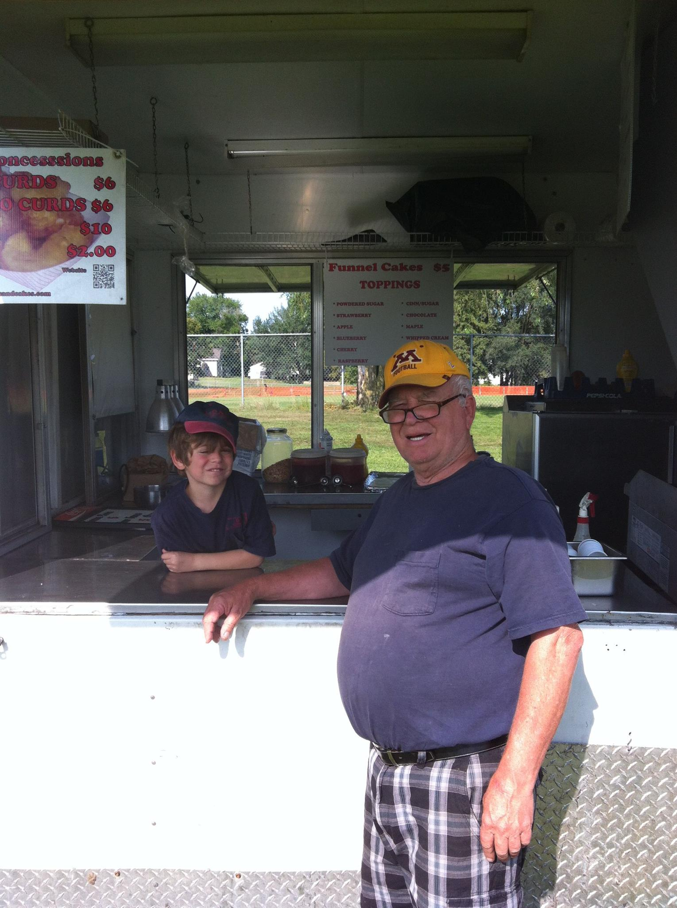
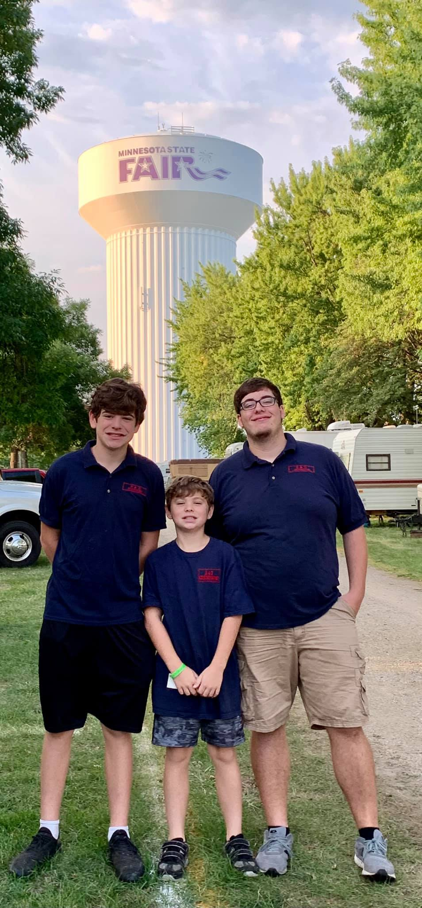

We are a proud family owned business that serves delicious classic fair food. We specialize in our signature cheese curds, funnel cakes, and deep fried Oreos. It all started with 1 trailer at a couple small events. Now, we have 5 trailers and are at numerous county fairs and other events across Minnesota, Wisconsin, and North Dakota. We strive to provide excellent customer service and food to all customers.
Our Past

Our past at D&D Fair Foods is deeply connected with our roots. The name D&D comes from the initials of our company founders, Aldora (Dodie) and Dewane, who drove this company to success through their love for food, kindness, and family. These values are still instilled in the company today as we strive to uphold them to the fullest and make Dodie and Dewane proud. Pictured from Left to Right: Dewane Kjaer and grandson Zach Kjaer.
Us Now
Who we are now is a culmination of all of our past experiences and where we are. All of us here at D & D Fair Foods strive to uphold the values that Dodie and Dewane established. We strive to provide excellent food and outstanding service at all locations. The love for family is still present as well. Dodie and Dewane's son Darin has taken the reigns, with grandkids working in most locations! You may even see Dodie behind the trailer reading the newest John Grisham novel! Although Dewane is no longer with us, Darin is a spitting image and carries on his legacy with his charisma, kindness, and even his corny jokes. Pictured from Left to Right: Zach Kjaer, Sam Kjaer, Nathan Kjaer
